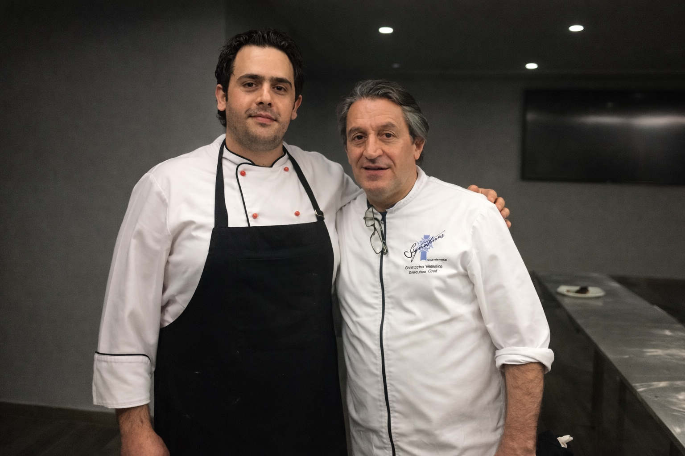
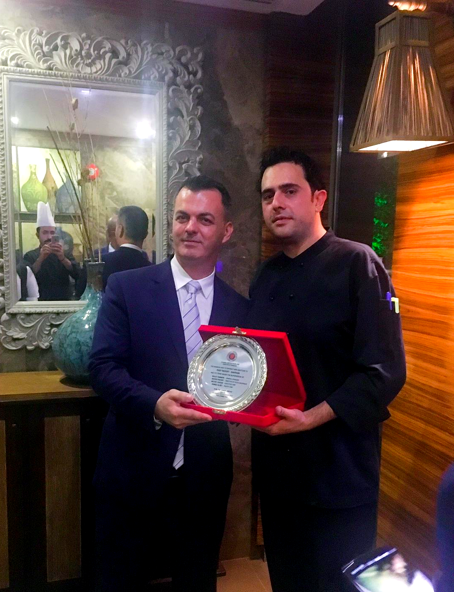

Menu Development
Designing menus that reflect the identity of the concept while balancing creativity, operational practicality, and guest appeal.
Culinary Consulting
Michel Karam supports hospitality brands with culinary direction, kitchen refinement, training, and operational structure designed to elevate both guest experience and back-of-house performance.

What Michel Offers
Michel’s services are designed for hospitality brands that want stronger culinary identity, cleaner execution, and a higher standard of operational consistency.
Whether supporting a new concept, refining an existing kitchen, or strengthening team performance, the focus remains the same: practical improvement, premium standards, and hospitality that feels credible at every level.
Strategy, culinary identity, operational clarity, and execution that holds up in real service.
Core Services
Tailored support for hospitality concepts, kitchens, and culinary teams seeking stronger standards and more refined execution.
Designing menus that reflect the identity of the concept while balancing creativity, operational practicality, and guest appeal.
Training teams to work with stronger consistency, discipline, communication, and confidence during live service.
Shaping the culinary identity of a concept through style, menu direction, execution standards, and guest experience alignment.
Improving workflow, structure, prep logic, and service performance to support a more effective and controlled kitchen environment.
Supporting launches with culinary setup, menu planning, team direction, and practical systems that prepare the operation for service.
High-level support for hospitality brands seeking stronger standards, a clearer culinary identity, and trusted leadership input.
Process
Review the concept, kitchen environment, team dynamics, and current level of execution.
Identify what needs to improve, from menu direction to systems, standards, and performance.
Apply practical solutions through culinary guidance, structure, training, and operational support.
Strengthen the overall standard of the operation so the experience feels more polished, consistent, and credible.

Who This Is For
Hotels and resorts seeking stronger culinary standards
Restaurants refining menu direction and kitchen performance
New hospitality concepts preparing for launch
Operations needing team development and clearer structure
Brands aiming to elevate guest experience through better execution